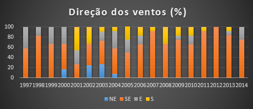

-

Roteiro Geoturístico do Centro Histórico de João Pessoa
-

Roteiro Geoturístico do Centro Histórico de João Pessoa
-

Roteiro Geoturístico do Centro Histórico de João Pessoa
Elementos Climáticos
Temperatura
Ao longo do ano, a temperatura pode variar de acordo com uma série de fatores como, por exemplo, a quantidade de insolação e a passagem de correntes marítimas e de massas de ar, por exemplo.
Segundo os dados da EMO de João Pessoa, para o período entre 1977 e 2014, expressos na gráfico 1, nota-se a presença de duas estações do ano: um verão quente, entre outubro e março, com médias térmicas máximas em torno dos 31ºC e um inverno ameno, entre abril e setembro, com médias mínimas em torno dos 22ºC. Assim, a amplitude térmica sazonal é de cerca de 3ºC, variando entre 25ºC e 28ºC. Esta variação térmica tem relação direta com a insolação na área onde, entre o equinócio de primavera e o de outono, quando o sol alcança o zênite duas vezes, atinge-se o máximo de calor, 31ºC. Após o equinócio do outono no Hemisfério Sul, em março, a posição da Terra em relação ao sol faz com que os raios solares atinjam João Pessoa com uma inclinação maior, reduzindo as temperaturas. A proximidade do Equador, entretanto, faz com que estas médias sejam relativamente altas, diferentemente das regiões com latitudes superiores, no Brasil.

Apesar das intensas oscilações durante o período amostrado (gráfico 2), as temperaturas médias anuais mostraram um aumento em torno de 1,5ºC, entre 26ºC e 27,5ºC, provavelmente associado à urbanização e, consequentemente, ao desmatamento o que gera ilhas de calor. Nota-se, entretanto, a presença de anos atípicos, como 1998 e 1985/2009, com temperaturas bem mais elevadas e bem mais baixas do que a média, respectivamente.

Umidade e precipitação
A umidade do ar corresponde ao volume d’água, presente na atmosfera, na forma de vapor. Este volume pode ser quantificado de modo absoluto (g/m3) ou relativo (%), tendo uma relação direta com a nebulosidade e, consequentemente, com as precipitações, ou seja, quanto maior a umidade do ar, maior a possibilidade de haver precipitação, seja na forma de neve, geada, orvalho, chuva ou granizo. Considerando que a área mapeada possui baixas latitudes, as precipitações se dão na forma de chuvas. Os dados da EMO foram expressos em percentagem e aqui serão apresentados.
Segundo esses dados, referentes ao período 1977-2014, a umidade média do ar de João Pessoa é de 75,5%. O gráfico 3 mostra que o verão apresenta as menores taxas de umidades, entre 72% e 74%, aumentando com o decréscimo da temperatura, até 82%.
Este aumento de umidade reflete-se na concentração de chuvas no outono-inverno, conforme o gráfico 4. A concentração de chuvas neste período é consequência da circulação de massas de ar quentes (tropical atlântica, através dos ventos alísios de sudeste) e frias (polar atlântica), que se deslocam para a zona de baixa pressão formada no litoral nordestino no inverno e que acabam por colidir no meio do ano no litoral oriental da região, gerando intensas chuvas frontogênicas, concentradas entre os meses de maio e agosto. A frontogênese acaba por induzir a formação de um Vórtice Ciclônico na Alta Troposfera, que corresponde a uma intensa nebulosidade na alta troposfera (PARAÍBA, 2000, apud NÓBREGA, 2002). Segundo a autora, contribui para tanto, nos meses mais frios, a atuação dos Aglomerados Convectivos associados a distúrbios ondulatórios de leste, ou ‘ondas de leste’, que correspondem a ventos que se deslocam da África, no sentido E-W, com uma velocidade de 10º de longitude por dia e um comprimento de 4000 Km. Entretanto, como veremos a seguir, o papel destes ventos é reduzido na produção da pluviosidade, uma vez que não circulam na área no período chuvoso, se restringindo aos meses mais quentes e mais secos (outubro a março).


A média pluviométrica anual, no período supracitado, foi de 1838 mm, tendo nos meses de abril a julho seu ápice (entre 261 mm e 326 mm) e entre outubro a dezembro seu mínimo (em torno de 30 mm/mês). Corroborando os dados de Vasconcelos (2010), entretanto, alguns anos mostraram anomalias significativas, seja na pluviosidade anual, seja na pluviosidade mensal, o que não reduz a confiabilidade dos dados, visto que os ‘outliers’ foram desconsiderados nos cálculos de média.
A tabela 1 mostra alguns destes ‘outliers’, no que diz respeito a uma quantidade mensal de chuva superior ou inferior à média.
Pelas tabelas a seguir, pode-se perceber que, em alguns anos, há uma concentração de anomalias, que acabaram por afetar a pluviosidade total. Em 1982, por exemplo, um fenômeno El Niño extremamente forte (GLYNN, 1990) afetou o clima do litoral nordestino, registrando uma pluviosidade de apenas 500 mm, praticamente um terço do valor médio, repetindo o que havia ocorrido no ano anterior, com uma precipitação acumulada de apenas 635 mm. Aliás, o somatório de pluviosidade dos anos de 1981, 1982 e 1983 foi de 2330 mm, ou seja, apenas 25% a mais do que chove, normalmente, em um ano. Conforme documentos históricos, estas secas já haviam assolado João Pessoa em outros séculos, mas no século XX não se havia noticiado nada parecido. Outros anos atípicos foram 1979, 1993, 1999, 2001 e 2006, com o total pluviométrico em torno de 1000 mm. Nestes anos de déficit pluviométrico, o Anticiclone Subtropical do Atlântico Sul e os ventos alísios de sudeste estavam mais intensos, empurrando a Zona de Convergência Intertropical, responsável pela nebulosidade e chuvas no litoral, mais para o norte (PARAÍBA, 2000 apud NÓBREGA, 2002).
| Mês/Ano | Média mensal normal | Quantidade Registrada |
|---|---|---|
| Mar/1984 | 164 mm | 654,7 mm |
| Ago/1985 | 287 mm | 675,8 mm |
| Abr/1989 | 261 mm | 680,6 mm |
| Mai/1994 | 270 mm | 620,5 mm |
| Jun/1994 | 326 mm | 709,4 mm |
| Jan/2004 | 74 mm | 303,2 mm |
| Set/2013 | 76,5 mm | 287,5 mm |
| Mês/ano | Média mensal normal | Quantidade registrada |
|---|---|---|
| Mar/1981 | 164 mm | 10,9 mm |
| Abr/1982 | 161 mm | 1,2 mm |
| Mai/1982 | 270 mm | 22,2 mm |
| Jun/1982 | 326 mm | 9,2 mm |
| Jul/1982 | 287 mm | 1,1 mm |
| Ago/1982 | 151 mm | 21,5 mm |
| Out/1985 | 32 mm | 1,1 mm |
| Dez/1987 | 31 mm | 1,5 mm |
| Fev/1989 | 102 mm | 11,3 mm |
| Jan/2006 | 74 mm | 7,2 mm |
| Nov/2012 | 27 mm | 2 mm |
O ano mais chuvoso do período analisado foi 1985, com valores ultrapassando 3000 mm. Acima de 2300 mm, destacam-se os anos de 1978, 1994, 1996, 2000 e 2009. Nestes anos, o Anticiclone Subtropical do Atlântico Norte e os ventos alísios de nordeste estão mais intensos, empurrando a Zona de Convergência Intertropical mais para o sul, ‘estacionando’ sobre o litoral nordestino por um período mais longo que o normal.
Ventos
Os ventos correspondem à movimentação do ar, causada por diferenças de pressão atmosférica, cujo sentido se dá de altas para baixas pressões. O vento tem o papel de funcionar como um agente exógeno, modelando as formas de relevo, sendo um dispersor de sedimentos ao longo da superfície, assim como de poluentes para a alta atmosfera, servindo também como gerador de ondas no oceano, com uma relação direta na morfologia da costa. As brisas marítimas, também, tem um papel fundamental no clima urbano como amenizador das altas temperaturas e, no caso de João Pessoa, uma legislação estadual e municipal especial1 , proibindo a construção de edifícios com mais de 12,90 m, numa primeira linha de lotes, a 35 m, numa última linha, até 500 m a partir da preamar de sizígia, propicia a interferência reduzida na direção e velocidade dos ventos. Entender a dinâmica atmosférica por este viés é importante e será descrita neste capítulo.
A partir dos dados da EMO, foi identificado a direção e velocidades dos ventos que percorreram a área entre 1997 e 2014. Com relação à direção dos ventos (gráfico 5), há um predomínio absoluto de ventos de direção SE, principalmente a partir de 2005, chegando a frequência de 100% em 2012, seguido dos ventos de quadrante NE, E e S, que marcaram um equilíbrio na frequência nos anos de 2001 a 2003, com exceção do ano de 2001, em que ventos de direção NE não circularam na região. Os ventos de SE possuem uma velocidade média de 2,91 m/s, enquanto os ventos de E e S possuem velocidades médias de 2,96 m/s e 2,97 m/s, respectivamente.

{kind=link}
Os ventos de direção E também circulam, preferencialmente, entre os meses de outubro e março. Sua velocidade média é de 2,96 m/s, enquanto os ventos de quadrante S, na forma de massas polares, circulam no meio do ano, tendo, assim, relação direta com as intensas chuvas nesta época, também como com as quedas de temperatura. Sua velocidade média é de 2,97 m/s.
Os elementos climáticos possuem um papel fundamental na configuração do relevo de uma área, funcionando como um agente exógeno que esculpe as rochas por meio do intemperismo, seja químico, seja físico, formando e erodindo o solo, em momentos de intensa pluviosidade, por exemplo, causam desabamentos de encostas e, assim, incômodos à população civil, normalmente a de baixa renda. Ademais, influenciam diretamente na distribuição da vegetação sobre o território, nas suas características morfológicas e na configuração da linha de costa. Desse modo, sua análise, presente neste subcapítulo, possui papel importante para a seleção de alguns Locais de Interesse, principalmente localizados na área costeira da tese.
1 Constituição do Estado da Paraíba (Art. 229), Lei Orgânica para o Município de João Pessoa (Art. 175) e o Plano Diretor de João Pessoa (Art. 25).